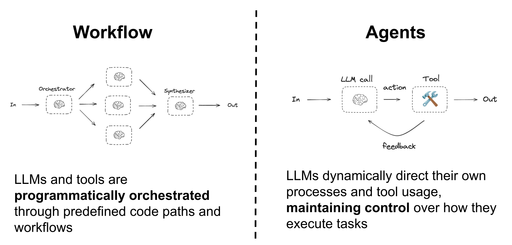
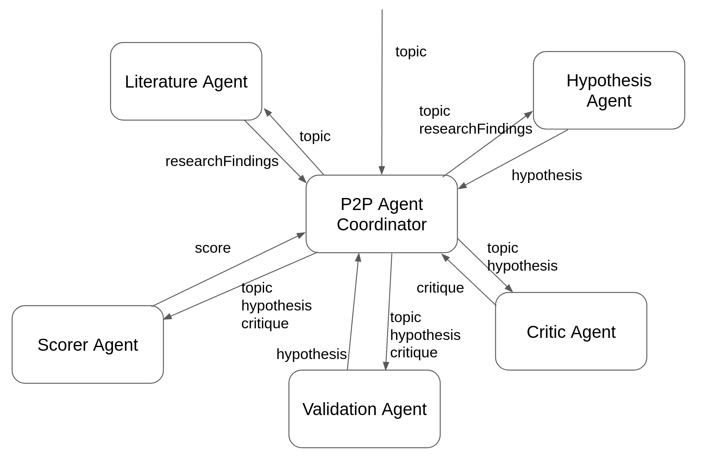
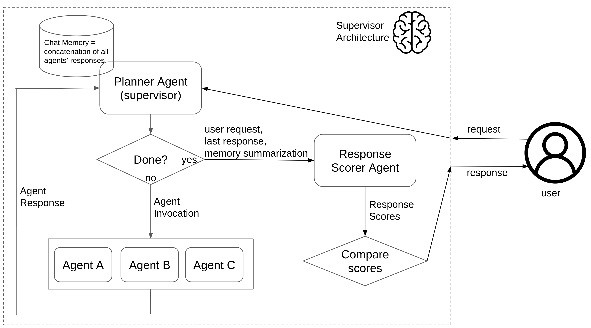
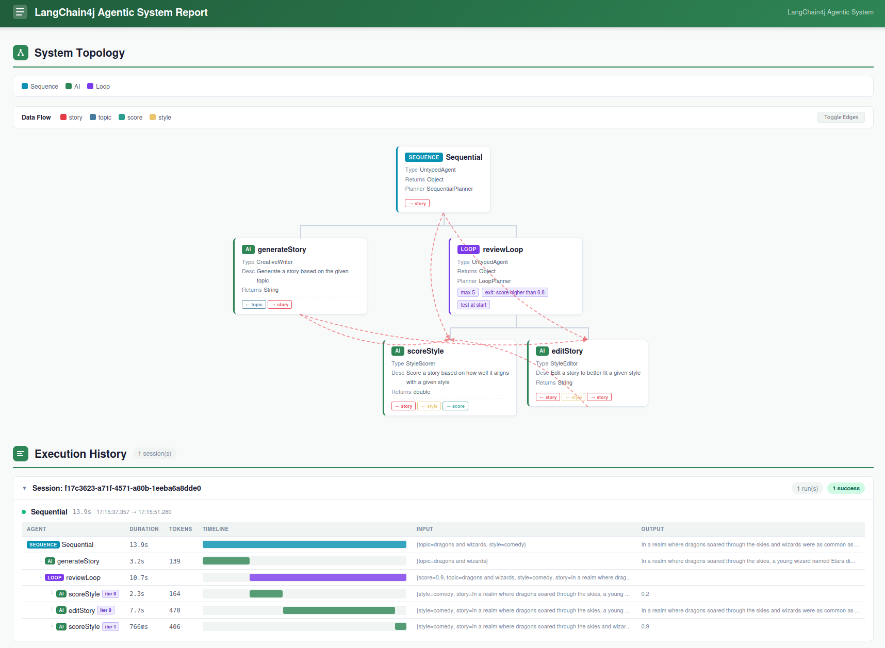
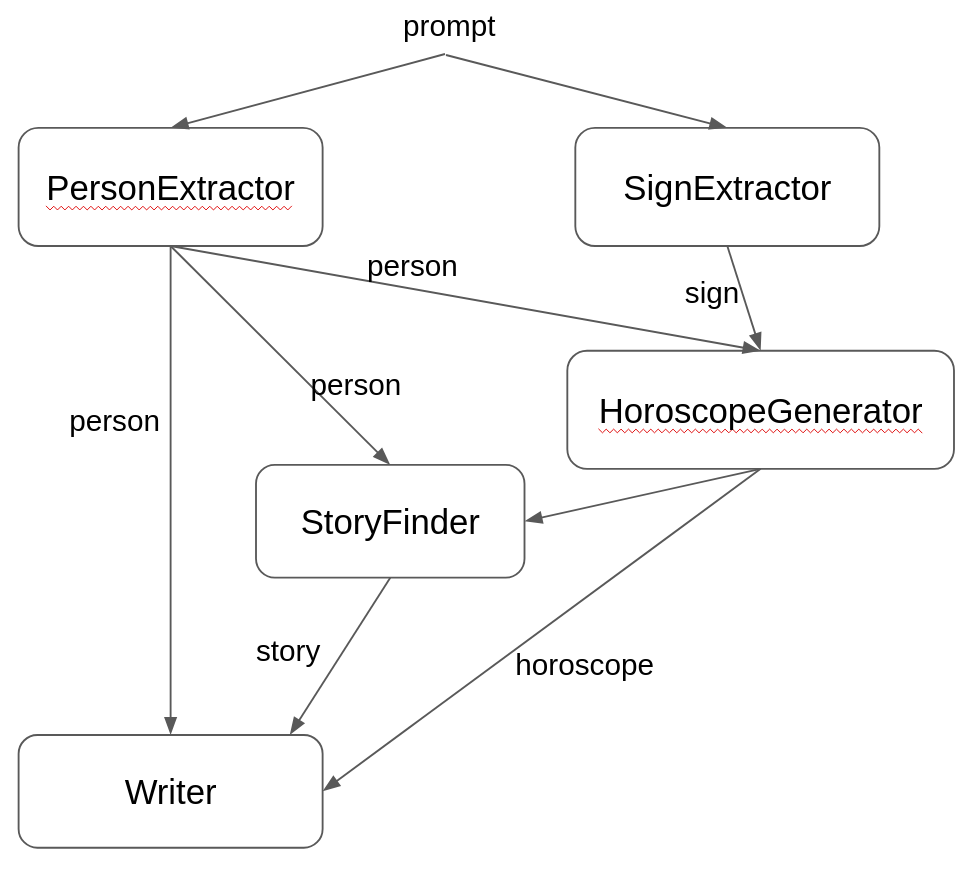

让 LLM 从工具走向自主 —— 定义多 Agent 协作拓扑，LangChain4j 自动编排执行。从顺序工作流到对等协作，从监督者模式到循环自优化，构建真正智能的 Agent 系统。
There are two main patterns for building LLM-powered systems. Workflow uses predefined code paths to orchestrate LLMs and tools — deterministic, predictable, and easy to debug. Agents let LLMs dynamically direct their own processes and tool usage, maintaining control over how they execute tasks — flexible, adaptive, but less predictable.
构建 LLM 驱动系统有两种主要模式。Workflow 使用预定义的代码路径编排 LLM 和工具 —— 确定性、可预测、易于调试。Agents 让 LLM 动态指导自身流程和工具使用，保持对任务执行方式的控制 —— 灵活、自适应，但可预测性较低。

Agent is the basic building block. Think of it as an AI Service with a name, description, input/output types, and a set of tools. Planner defines the topology — how agents communicate. Orchestrator executes the plan. LangChain4j ships with Sequential, P2P, Supervisor, and Loop planners. You can also build custom planners.
Agent 是最基本的构建块，可理解为带名称、描述、输入/输出类型和工具集的 AI Service。Planner 定义拓扑 —— Agent 之间如何通信。Orchestrator 执行计划。LangChain4j 内置 Sequential、P2P、Supervisor 和 Loop 规划器。你也可以构建自定义规划器。
The simplest planner — agents execute one after another in a fixed order. Each agent receives the output of the previous agent as input. When all agents complete, the final result is returned. Use SequentialPlanner with addAgent() to define the chain.
最简单的规划器 —— Agent 按固定顺序依次执行。每个 Agent 接收前一个 Agent 的输出作为输入。所有 Agent 完成时返回最终结果。使用 SequentialPlanner 配合 addAgent() 定义链条。
// 定义 Agent Agent agent1 = Agent.builder() .name("Story Generator") .description("Generates a story based on a given topic") .provider(storyGenAiService) .inputType(String.class) .build(); Agent agent2 = Agent.builder() .name("Story Reviewer") .description("Reviews and improves the story") .provider(reviewerAiService) .inputType(String.class) .build(); // 创建顺序规划器并编排 SequentialPlanner planner = new SequentialPlanner() .addAgent(agent1) .addAgent(agent2); Orchestrator orchestrator = new Orchestrator(planner); OrchestratorResponse response = orchestrator.execute("A story about dragons");
Each agent works on the same task but from a different angle, specializing in a specific aspect. The coordinator accumulates all results and passes them to the next agent. This is ideal for research tasks: Literature Agent finds papers, Hypothesis Agent generates hypotheses, Critic Agent evaluates, Validation Agent refines, Scorer Agent scores.
每个 Agent 从不同角度处理同一任务，专精于特定方面。协调器累积所有结果并传递给下一个 Agent。非常适合研究任务：Literature Agent 查找文献，Hypothesis Agent 生成假设，Critic Agent 评估，Validation Agent 验证细化，Scorer Agent 评分。

// 创建 P2P 规划器 — 每个 Agent 专注不同角色 P2PAgentPlanner planner = new P2PAgentPlanner() .addAgent(literatureAgent) .addAgent(hypothesisAgent) .addAgent(criticAgent) .addAgent(validationAgent) .addAgent(scorerAgent); Orchestrator orchestrator = new Orchestrator(planner); OrchestratorResponse response = orchestrator.execute("climate change impact on agriculture");
A Planner Agent (supervisor) acts as the central coordinator, deciding which worker agent to invoke next based on accumulated chat memory. A Response Scorer Agent evaluates quality before returning to the user. The supervisor iterates until the task is "done", then passes results through the scorer for final quality check.
Planner Agent（监督者）作为中央协调器，根据累积的聊天记忆决定下一步调用哪个 worker Agent。Response Scorer Agent 在返回给用户前评估质量。监督者持续迭代直到任务"完成"，然后通过评分器进行最终质量检查。

// 监督者模式：Planner Agent 决定调用哪个 worker、何时完成 SupervisorPlanner planner = new SupervisorPlanner() .plannerAgent(plannerAgent) // 监督者 LLM .responseScorerAgent(scorerAgent) // 质量评分器 .addAgent(agentA) .addAgent(agentB) .addAgent(agentC); Orchestrator orchestrator = new Orchestrator(planner);
Repeatedly calls a single agent with evolving prompts, refining the output until a quality threshold is met. Uses LoopPlanner with configurable max iterations, exit condition, and test position (at start or end). Perfect for iterative refinement like story editing with style scoring.
反复调用单个 Agent，使用不断演化的提示词，逐步优化输出直到满足质量阈值。使用 LoopPlanner 配置最大迭代次数、退出条件和测试位置（循环开始或结束时）。非常适合迭代优化，如带风格评分的故事编辑。
// 循环规划器：最多 5 次迭代，分数高于 0.8 时退出 LoopPlanner planner = new LoopPlanner() .addAgent(generateStoryAgent) .addAgent(scoreStyleAgent) .addAgent(editStoryAgent) .maxIterations(5) .exitCondition("score higher than 0.8") .testAtStart(); // 在循环开始时检查条件 Orchestrator orchestrator = new Orchestrator(planner); OrchestratorResponse response = orchestrator.execute(input); // 每次迭代：生成 → 评分 → 如不达标则编辑 → 重新评分 // 直到分数 > 0.8 或达到最大迭代次数
maxIterations 作为安全阀。即使 LLM 永远无法满足退出条件，系统也会在达到上限后优雅终止，返回当前最佳结果。
OrchestratorResponse includes an AgentReport with detailed execution history: each agent's duration, token usage, input/output, and iteration count. Use for debugging, performance analysis, and cost tracking. The report also includes a Gantt-style timeline visualization.
OrchestratorResponse 包含 AgentReport，提供详细执行历史：每个 Agent 的耗时、token 用量、输入/输出和迭代次数。用于调试、性能分析和成本追踪。报告还包含甘特图式的时间线可视化。

// 获取执行报告 OrchestratorResponse response = orchestrator.execute(input); AgentReport report = response.agentReport(); // 遍历每次 Agent 执行 for (AgentExecution exec : report.executions()) { System.out.println(exec.agentName()); // Agent 名称 System.out.println(exec.duration()); // 执行耗时 System.out.println(exec.totalTokens()); // Token 消耗 System.out.println(exec.input()); // 输入数据 System.out.println(exec.output()); // 输出数据 System.out.println(exec.iteration()); // 迭代编号 } // 渲染为 HTML 报告 String html = AgentReportRenderer.render(report);
A complete example combining Sequential and Loop planners. The pipeline extracts person and zodiac sign from a prompt, generates a horoscope, finds a relevant story, and writes the final output. Multiple agents collaborate: PersonExtractor, SignExtractor, HoroscopeGenerator, StoryFinder, and Writer.
一个完整示例，结合了 Sequential 和 Loop 规划器。流水线从 prompt 中提取人物和星座，生成运势，查找相关故事，撰写最终输出。多个 Agent 协作：PersonExtractor、SignExtractor、HoroscopeGenerator、StoryFinder 和 Writer。

// 阶段 1: 顺序提取 → 并行执行 SequentialPlanner phase1 = new SequentialPlanner() .addAgent(personExtractor) // 提取人物信息 .addAgent(signExtractor); // 提取星座信息 // 阶段 2: 生成运势 → 查找故事 → 撰写 SequentialPlanner phase2 = new SequentialPlanner() .addAgent(horoscopeGenerator) // 生成星座运势 .addAgent(storyFinder) // 查找相关故事 .addAgent(writer); // 最终撰写 // 各 Agent 可配置不同的 LLM 模型 // 提取器用便宜模型，生成器用高性能模型
Orchestrators can be nested — an orchestrator can be wrapped as an Agent and used inside another orchestrator. This enables complex, multi-level workflows. For example, the Horoscope pipeline's reviewLoop (a LoopPlanner orchestrator) is nested inside a SequentialPlanner as the top-level workflow.
编排器可以嵌套 —— 一个编排器可以包装为 Agent，在另一个编排器中使用。这实现了复杂的多层次工作流。例如，Horoscope 流水线中的 reviewLoop（LoopPlanner 编排器）嵌套在顶层 SequentialPlanner 中。
// 内层循环编排器 LoopPlanner reviewLoop = new LoopPlanner() .addAgent(scoreStyle) .addAgent(editStory) .maxIterations(5) .exitCondition("score higher than 0.8"); // 将循环编排器包装为 Agent Agent reviewAgent = Agent.builder() .name("reviewLoop") .provider(reviewLoop) // 编排器本身作为 provider .build(); // 外层顺序编排器，包含嵌套的循环编排器 SequentialPlanner mainPipeline = new SequentialPlanner() .addAgent(generateStory) .addAgent(reviewAgent); // 嵌套编排器
The simplest way to create an Agent is from an existing AI Service. Use AiServiceAgentProvider which wraps an AI Service as an Agent. The AI Service's method parameters become the Agent's input type, and the return type becomes the output type. Tools configured on the AI Service are automatically available to the Agent.
创建 Agent 最简单的方式是从现有 AI Service 转换。使用 AiServiceAgentProvider 将 AI Service 包装为 Agent。AI Service 的方法参数成为 Agent 的输入类型，返回类型成为输出类型。AI Service 上配置的工具自动对 Agent 可用。
// 定义 AI Service interface StoryGenerator { @SystemMessage("You are a creative story writer.") @UserMessage("Generate a story based on: {{it}}") String generate(String topic); } StoryGenerator storyGen = AiServices.create(StoryGenerator.class, model); // 包装为 Agent Agent agent = Agent.builder() .name("generateStory") .description("Generate a story based on the given topic") .provider(new AiServiceAgentProvider(storyGen)) .inputType(String.class) .outputType(String.class) .build();
| 实践 | 说明 | 原因 |
|---|---|---|
| Agent 小而专 | 每个 Agent 只做一件事，名称和描述清晰具体 | LLM 更容易正确选择和使用 Agent |
| 按需分配模型 | 简单任务用便宜模型，复杂任务用高性能模型 | 优化成本而不牺牲质量 |
| 始终设置 maxIterations | LoopPlanner 必须设置上限 | 防止无限循环和成本失控 |
| 利用 Agent Report | 生产环境启用报告收集 | 便于调试、性能分析和成本追踪 |
| 嵌套编排器 | 复杂流程拆分为多层嵌套编排器 | 提高可维护性和可测试性 |
| 混合 Workflow 与 Agents | 确定性路径用 Workflow，需自适应处用 Agents | 兼顾可靠性和灵活性 |